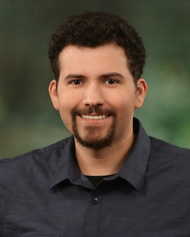

 Hi, I'm am avid Golang hacker for over 5 years now. I specialize in microservices, distributed timeseries databases, and kubernetes. I speak at many conferences around the world, my videos are below. I enjoy hacking on some open source projects like Prometheus . I'm an American software developer living in Bangkok. If you are interested in hiring me for consulting, speaking or otherwise please contact me here hyper@hyperworks.nu
My talks
Distributed Scheduler Hell, with Go. GopherCon Singapore 2017
Distributed Scheduler Hell. SRE Conf Asia 2017
Distributed Timeseries in Go. GopherCon India 2017
Distributed Scheduler Hell. MicroXChng Berlin 2017
Cloud in your Cloud. Gophercon India 2016
Cloud in your Cloud, how we build DigitalOcean - microXchg 2016
Game Programming for Education in JavaScript - JSConf.Asia 2015
Chaos Monkey on my Laptop - GothamGo 2015
How to keep wall street chatting using Go - GopherConIndia 2015